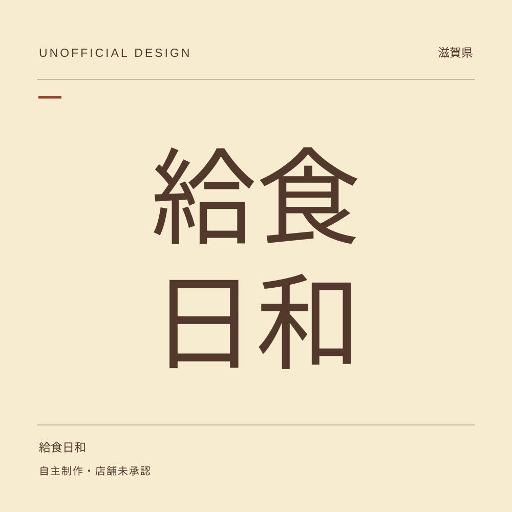
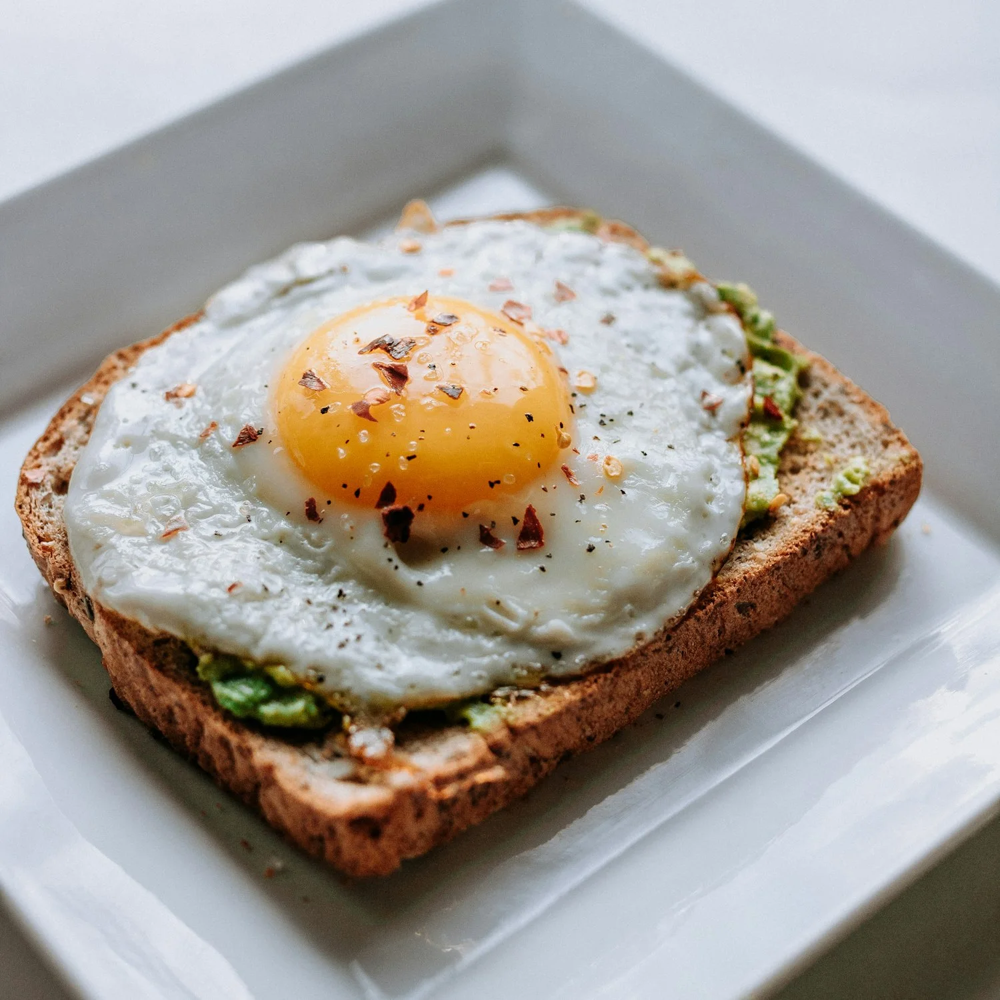

ごはんとカフェ / 滋賀県
ABOUT THE CAFE
懐かしい時間を、もう一度。
PLAN YOUR VISIT
訪れる前に。
公開情報の確認日：2026年11月26日。住所・営業内容は掲載時点の情報で、変更される場合があります。


ごはんとカフェ / 滋賀県
ABOUT THE CAFE
PLAN YOUR VISIT
公開情報の確認日：2026年11月26日。住所・営業内容は掲載時点の情報で、変更される場合があります。
